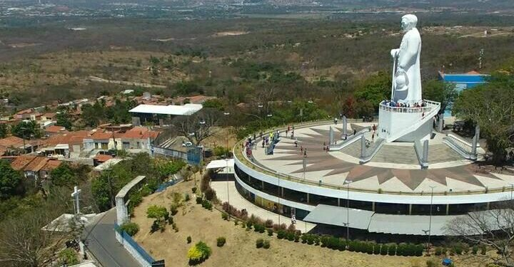

Padre Cícero do Juazeiro
Na Colina do Horto, há uma estátua em homenagem ao Padre Cícero. Há também um pequeno museu e uma igreja. A estátua foi esculpida por Armando Lacerda em 1969 e foi inaugurada no dia 1° de novembro do mesmo ano pelo prefeito José Mauro Castelo Branco Sampaio. Já o engenheiro responsável foi Rômulo Ayres Montenegro, com todos os cálculos de engenharia da estátua e da base. É um dos pontos mais visitados do município de Juazeiro do Norte.
A Estátua
Esculpida em concreto, a estátua possui 27 metros de altura, no local que era sempre escolhido pelo sacerdote para os seus retiros espirituais.
Importância
Padre Cícero Romão Batista, conhecido como Padre Cícero, foi uma figura carismática e líder religioso que exerceu grande influência no Nordeste do Brasil. Ele é especialmente importante por:
- Liderança Religiosa: Atraindo uma enorme devoção popular devido a seus supostos milagres e atuação pastoral.
- Juazeiro do Norte: Sua figura tornou a cidade de Juazeiro do Norte um importante centro de peregrinação religiosa.
- Movimento Religioso e Social: Além do aspecto religioso, sua atuação envolveu questões sociais e políticas, defendendo os mais pobres.
- Ações Sociais e Caridade: Reconhecido por suas ações de caridade e assistência aos necessitados.
- Identidade Cultural: Contribuiu para a formação da identidade cultural do Nordeste brasileiro.
- Folclore e Tradições Populares: Associado a lendas e tradições populares, enriquecendo o folclore da região.
- Aspectos Políticos e Históricos: Participou de eventos políticos e históricos relevantes para o Brasil, como a "Questão de Juazeiro".
Embora seja venerado por muitos, sua figura também é objeto de controvérsias e debates, com divergências com a Igreja Católica em certos momentos.
Localização
A estátua do Padre Cícero está localizada na Colina do Horto, em Juazeiro do Norte, Ceará, Brasil. O local é de fácil acesso e é um dos pontos mais visitados do município. É um lugar de devoção e contemplação para os romeiros e turistas que desejam conhecer mais sobre a história e a importância do Padre Cícero.
Curiosidades
- A estátua do Padre Cícero é a segunda maior escultura religiosa do Brasil, ficando atrás apenas do Cristo Redentor no Rio de Janeiro.
- O processo de construção da estátua durou cerca de um ano e envolveu muitos trabalhadores e artistas locais.
- A Colina do Horto, onde a estátua está localizada, é um espaço de peregrinação que recebe milhares de fiéis em datas importantes do calendário religioso.
- Em 2015, a estátua do Padre Cícero foi tombada como patrimônio cultural imaterial do Brasil pelo Instituto do Patrimônio Histórico e Artístico Nacional (IPHAN).
- Além da estátua, Juazeiro do Norte possui outros locais de interesse histórico e religioso relacionados à vida e legado do Padre Cícero.
Visitação
Informações sobre como visitar a estátua do Padre Cícero, endereço, horários de funcionamento e outras orientações úteis para os visitantes: Prefeitura de Juazeiro do Norte.